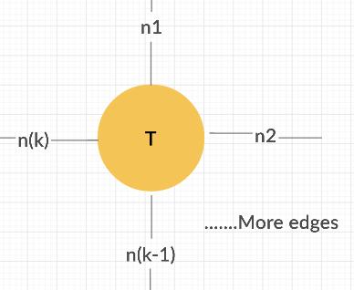
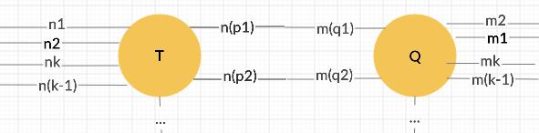
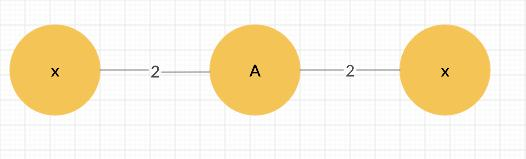
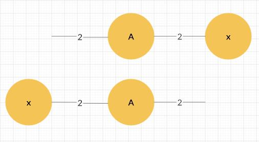

Computing Derivatives of tensor functions
Consider a multivariable function such as:
\[f(x)=x^TAx, x \in \mathbb{R}^n, A \in \mathbb{R}^{n \times n} \]
Let's see an example, suppose we have that:
\[ A=\begin{bmatrix}
a & b\\
c & d
\end{bmatrix} ,
x=\begin{bmatrix}
e\\
f
\end{bmatrix} \]
We then have that:
\[ x^TAx= \sum_{1\leq i,j \leq 2} A_{ij}x_ix_j= e^2a+efb+efc+f^2d\]
Where here, \(A_{ij}, x_i \) denote the \(ij\) entries of the matrix \(A\) and the \(i\) entry of the vector \(x\) respectively.
Now, let's consider the partial derivative of \(f(x)\) with respect to the first and second entry, \(e\) and \(f\), of the vector \(x\):
\[\frac{\partial (e^2a+efb+efc+f^2d)}{\partial e }= 2ae+fb+fc\]
\[\frac{\partial (e^2a+efb+efc+f^2d)}{\partial f }= eb+ec+2fd\]
We could think of the vector formed by the grouping of the two partial derivatives to be the derivative of the function \(f(x)\) with respect to the vector \(x\):
\[
\frac{\partial f(x)}{\partial x} =
\begin{bmatrix}
\frac{\partial f(x)}{x_1}\\
\frac{\partial f(x)}{x_2}
\end{bmatrix} = \begin{bmatrix}
2ae+fb+fc\\
eb+ec+2fd
\end{bmatrix} = \begin{bmatrix}
ae+bf\\
ce+df
\end{bmatrix}
+\begin{bmatrix}
ea+cf\\
eb+fd
\end{bmatrix}=
Ax+x^TA \]
There we go, we have computed the derivative of the function \(f(x)\) with respect the vector \(x\) to be \(Ax+x^TA \). But in general, the function could be much more complex and the range of the function might be multidimensional. In those cases, computing the derivatives would require to keep track of all possible partial derivatives and writing out the derivative as an equation of the tensors involved in the function is not as easy. For a function:
\[f(x) :\mathbb{R}^{n_1 \times n_2 \times...\times n_k} \to \mathbb{R}^{m_1 \times m_2 \times...\times m_z} \]
The derivative of \(f(x)\) with respect to \(x\) is a \(k+z\) order tensor:
\[ \frac{\partial f(x) }{\partial x} \in \mathbb{R}^{m_1 \times m_2 \times...\times m_k \times n_1 \times n_2 \times...\times n_z}\]
We think of the \(i_1,i_2,...,i_k,j_1,..,j_z\) entries of the tensor \(\frac{\partial f(x) }{\partial x}\) as a partial derivative of the \(j_1,..,j_z\) entry of \(f(x)\) with respect to the \(i_1,i_2,...,i_k\) entry of \(x\):
\[ \frac{\partial f(x) }{\partial x}_{i_1,i_2,...,i_k,j_1,..,j_z} =\frac{\partial (f_{j_1,..,j_z}(x))}{\partial x_{i_1,i_2,...,i_k}} \text{ where }\]
\[ f_{j_1,..,j_z}(x): \mathbb{R}^k \to \mathbb{R} \]
Often times in machine learning, we are dealing with multivariable, multidimensional functions. We want to have a simple way of given a compact expression of the derivative of functions.
In this tutorial, we introduce a method of using tensor network to compute derivative of tensor function.
A \(n^{th}\)-order tensor is just a \(k\) dimensional array of numbers:
\[ \mathbf{T} \in \mathbb{R}^{n_1,...,n_k} \text{ where the }(i_1,...,i_k) \text{ entry of } \mathbf{T} \text{ is represented as } \mathbf{T}_{i_1i_2...i_k} \]
For example, a matrix is also a second order tensor and a vector is also a first order tensor.
We can visualize a tensor as a vertex in a graph with labelled edges sticking out of it where the edges correspond to the dimensions of the tensor :

Sometimes, we can look at a slice/fiber of a tensor, namely, we fix all indices of the tensor except two/one of them. We can see an example of third order tensor by looking at its slices where we fixed the first dimension:
\[ \mathbf{T} \in \mathbb{R}^{2 \times 3 \times 4} \]
\[ \mathbf{T}_{1::}=\begin{bmatrix}
1 & 2 & 3 & 4\\
5 & 6 & 7 & 8\\
9 & 10 & 11 & 12
\end{bmatrix},
\mathbf{T}_{2::}=\begin{bmatrix}
10 & 20 & 30 & 40\\
50 & 60 & 70 & 80\\
90 & 100 & 110 & 120
\end{bmatrix}\]
Now, what is the slices along the second dimension of the tensor?
SHOW
\[ \mathbf{T}_{:1:}=\begin{bmatrix}
1 & 2 & 3 & 4\\
10 & 20 & 30 & 40
\end{bmatrix},
\mathbf{T}_{:2:}=\begin{bmatrix}
5 & 6 & 7 & 8\\
50 & 60 & 70 & 80
\end{bmatrix},
\mathbf{T}_{:3:}=\begin{bmatrix}
9 & 10 & 11 & 12\\
90 & 100 & 110 & 120
\end{bmatrix} \]
Suppose we have two tensors \( \mathbf{T} \in \mathbb{R}^{n_1 \times n_2 \times... \times n_k}, \mathbf{Q} \in \mathbb{R}^{m_1 \times m_2 \times...\times m_z} \) and suppose that \(n_{p_1}= m_{q_1}, n_{p_2}=m_{q_2},...,n_{p_l}=m_{q_l} \), then we can multiply the two tensor along those dimensions in which they are the same, for example:
\[(\mathbf{T} \times_{(n_{p_1},m_{q_1}),(n_{p_2},m_{q_2})} \mathbf{Q})_{i_1i_2...\cancel{i_{p_1}}...\cancel{i_{p_2}}...i_k j_1,...,\cancel{j_{q_1}}...\cancel{j_{q_2}}...j_z} =\sum_{b \in [n_{p_1}],d \in [n_{p_2}]} \mathbf{T}_{i_1i_2...b...d...i_k} \mathbf{Q}_{j_1,...,b...d...j_z} \]
\[[k]:=\{1,2,...,k\}\]
The corresponding tensor network representation of the product of those two tensor will be the network that result from the gluing of the edges in which the two tensors are multiplied together along the dimension on those edges:

For example, the expression \( x^TAx\) that we have seen so far can be represented as the following tensor network:

We see that the resulting tensor network has no extra edge that sticks out, namely, it has a free end. This confirm the fact that the expression \(x^TAx\) gives a scalar. Namely, it is \( 0\) dimensional.
To take the derivative of a function \(f(x)\) with respect to a tensor \(x\). We first draw its tensor network diagram, then if \(x\) appears once, we can simply cross it out. And if \(x\) appears \(m\) times, we make \(m\) copies of the tensor and cross each occurence of \(x\) once in each of the \(m\) tensor network and then add the result. For example, \(\frac{\partial (x^TAx)}{\partial x}\) is:

And the resulting tensor network does indeed represent \(x^TA+Ax\).
Let's now apply what we just learn on a concrete example. Let:
\[nn(x): \mathbb{R}^{n_0} \to \mathbb{R}^{n_n}, nn(x)= softMax(W_n(...\sigma(W_2(\sigma(W_1x+b_1))+b_2)...)+b_n) \]
\[ x \in \mathbb{R}^{n_0}, W_1 \in \mathbb{R}^{n_1 \times n_0}, b_1 \in \mathbb{R}^{n_1}, W_2 \in \mathbb{R}^{n_2 \times n_1}, b_2 \in \mathbb{R}^{n_2},...,W_n \in \mathbb{R}^{n_n \times n_{n-1}}, b_n \in \mathbb{R}^{n_n} \]
be a \(n\) layer neural netowrk for \(n_n\) class classification:
Let us use the normal \(L_2\) loss:
\[ L(x)= \|nn(x)-y \|_2 \]
Suppose for example, that we want to compute the derivative of the lost function \(L(x)\) with respect to \(W_1\). Then we can apply the chain rule, We let:
\[z_1 = W_1x+b_1, a_1=\sigma(z_1), z_2= W_2a_1+b_2, a_2=\sigma(z_2),...,z_n=W_na_{n-1}+b_{n}, a_n=softMax(z_n) \]
\[\frac{\partial L(x)}{\partial W_1}=\frac{\partial l(x)}{\partial a_n } \frac{\partial a_n}{\partial W_1}=\frac{\partial l(x)}{\partial a_n } \frac{\partial a_n}{\partial z_n}\frac{\partial z_n}{\partial W_1} \]